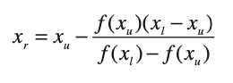

Metodo de la Falsa Posicion
Ésta es la fórmula de la falsa posición. El valor de xr calculado con la ecuación (5.7), reemplazará, después, a cualquiera de los dos valores iniciales, xl o xu, y da un valor de la función con el mismo signo de f(xr). De esta manera, los valores xl y xu siempre encierran la verdadera raíz. El proceso se repite hasta que la aproximación a la raíz sea adecuada. El algoritmo es idéntico al de la bisección (figura 5.5), excepto en que la ecuación (5.7).

Formula de la falsa Posicion
| Concepto | Valor | Valor inicial inferior (xl): |
|---|---|
| Valor inicial superior (xu): |
Resultado: